You're on call, again…
It's 2 AM and the phone rings. It's a nurse on the cardiac unit. Mr. Smith is due to get his antiarrhythmic drug (who comes up with these crazy drug schedules?) and his ECG has a borderline prolonged QTc interval, at least according to the computer. She's not sure if it is safe to give the drug. The nurse wants to send you the ECG.
You open the ECG on your phone. You look at the QT interval. You're not sure about the computer's measurement. You really should double check it. You start counting little boxes. You pull out the (t)rusty old pair of mechanical calipers some drug rep gave you many years ago, back when such largesse was still legal. You think to yourself: I live in a digital age. Am I really making measurements on my smart phone with a dumb pair of calipers?
Electronic Calipers
EP Calipers provides electronic calipers for measuring intervals on images of electrocardiograms (ECGs) or electrophysiologic recordings. In the electrophysiology lab electronic calipers are included as part of the recording system. EP Calipers is intended to provide similar electronic calipers for use on your Android phone or tablet. The electronic calipers of EP Calipers are more accurate, easier to use, and less dangerous than mechanical calipers (they don't have sharp points!).
What's new?
This new version of EP Calipers can be used to analyze PDF files, as well as standard image files. Multi-page PDF files are supported. Thus the app can be used to analyze AliveCor™ files as well as academic papers in PDF format.
Quick start
When EP Calipers starts, a sample ECG and a time caliper are loaded. Move the caliper around by touching the caliper's crossbar and dragging it with your finger. Expand and contract the caliper by putting your finger on either vertical bar and dragging. Pinch and zoom the underlying ECG image as needed. Drag the image around with your finger. Double-tap the ECG image to rapidly zoom in. The remainder of these instructions will go over how to load ECG images, add and delete calipers, calibrate the calipers and make advanced measurements like the corrected QT interval.
Loading an image
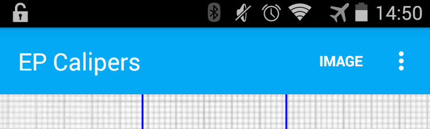
Figure 1: Image button at top right of screen
Use the Image button at the top right of the screen to switch to Image mode. The Image menu will appear at the bottom of your screen.
Figure 2: Image menu
With this menu you can load and adjust an ECG image. There are several ways to load an ECG image, as described next.
Take a photo of an ECG
Touch the Camera button to take a photo of an ECG tracing and load it into the app. Note that images captured this way are not saved in the photos collection of the device. It's best to use this option to make a quick measurement when you don't need to save the image. If you want to save the image use your camera app to take the picture and load the image into EP Calipers from your photo gallery as described next.
Select a photo from your photo gallery
Touch Select to chose an image that is already saved on your device in your photos collection, for example an image file attached to an email that you saved or a photo that your previously took.
Select a photo or PDF using the Share menu from other apps
EP Calipers can open image and PDF files regardless of where they are located on your device. You can directly open email attachments, downloaded files, Google Drive, and Dropbox files. It is also easy to open ECG images directly from the AliveCor AliveECG™ app. The key to opening images in external apps is to use the Share button. It usually looks like this:
Figure 3: Android Share button
Some apps use a different button style or distinguish between "sharing" and "opening" a file. For example the Dropbox app uses this style button:
Figure 4: Dropbox Open with button (left button)
The AliveECG app from AliveCor uses yet another style.
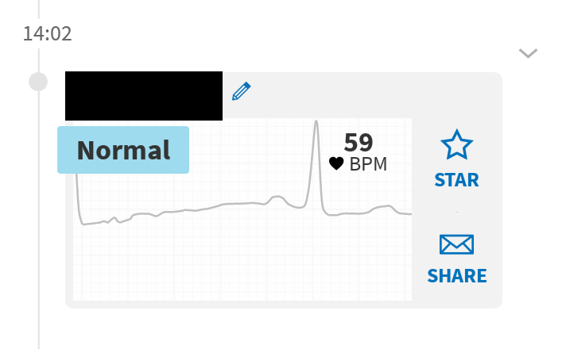
Figure 5: AliveECG Share button using an envelope icon
Once you select the AliveECG Share button, a dialog opens. Select PDF.
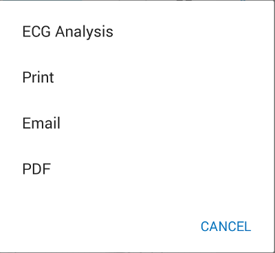
Figure 6: Select PDF to create a PDF file that can be opened by EP Calipers
You will then be given options for opening the PDF report. One of the options should be EP Calipers. Selecting this option will open the PDF image in the app.

Figure 7: Selecting EP Calipers will open the image in EP Calipers
Multiple page PDFs
When PDF files have more than one page, the app will display the first page initially. You can go to other pages by selecting Previous or Next in the Image menu.
Adjusting the image
You can adjust the positioning of the image using pinch-to-zoom, dragging, and double-tapping. Use the Adjust menu to fine-tune your image further.
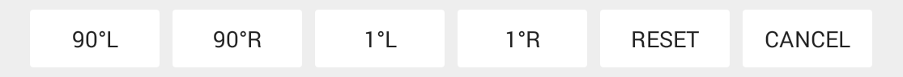
Figure 8: The Adjust menu
You can rotate the image by 90° in either direction, or by increments of 1°. This is particularly useful if the original image is rotated or not quite square to the screen. You should recalibrate your calipers after rotating the image. If you need to go back to the original image position use Reset. After adjusting the image select Done to return to the main image menu.
Exiting Image mode
After loading and adjusting the image, you need to exit Image mode so that you can use the calipers. Select the Measure button at the top left of the screen to return to the EP Calipers main screen.
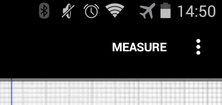
Figure 9: Use the Measure button to exit Image mode
Moving calipers
Drag the crossbar of a caliper to move it as a unit. Drag the left or right bars (or top or bottom in the case of vertical calipers) to stretch or shrink the calipers. Note that you cannot pinch both bars at the same time.
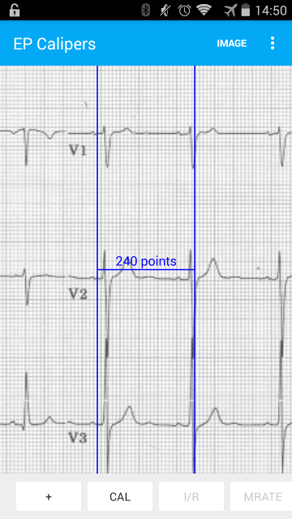
Figure 10: Single unselected uncalibrated time caliper
Making measurements
The interval measured by each caliper is displayed next to the crossbar of the caliper. Until the calipers are calibrated, measurements are displayed in arbitrary units (points, roughly equivalent to screen pixels)).
Adding and deleting calipers
Select the + or Add Caliper button to add new calipers.1
Figure 11: Main menu, prior to calibration
Calipers can be horizontal (time measurements) or vertical (amplitude measurements). Select Time or Amplitude to add the type of caliper you want. Double-tap a caliper to delete it.
Figure 12: Add caliper menu
Selecting a caliper
When more than one caliper is present, it is necessary to indicate which caliper you are using for calibration or to make measurements. You select or unselect calipers by tapping them. By default an unselected caliper is blue and a selected caliper is red (you can change these colors if you want). Single tapping an unselected caliper will select it. Tap it again (but not too soon after the first tap, as a double tap deletes the caliper) to unselect it. As there can be only one selected caliper at a time, selecting a caliper will unselect any other caliper that happens to be selected. In some cases a caliper will be selected automatically (for example to do calibration) if you have not already selected one. If you want to select a different caliper, just tap another caliper.
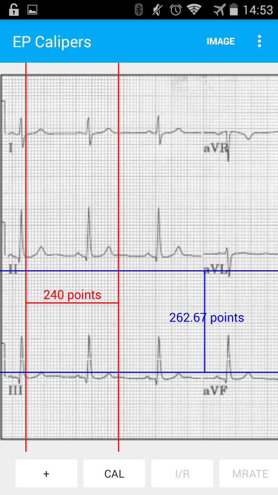
Figure 13: Two uncalibrated calipers: one time and one amplitude caliper. The time caliper is selected.
Calibration
Select Cal or Calibrate. Stretch the selected caliper over a known interval (such as 1000 msec for time, or 10 mm for amplitude calipers). Select Set. In the dialog box, make sure the interval matches what you are measuring. Enter both the calibration interval and units (e.g. 500 msec or 1 sec or 1 mV). Select Set in the dialog box to set the calibration. Time and amplitude calipers need to be calibrated separately. Once calibrated, calipers will show intervals in the units used to calibrate. Newly created calipers will use the same calibration.
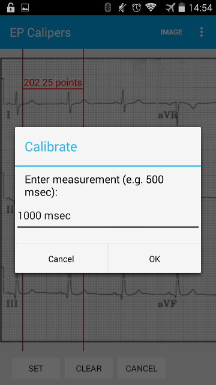
Figure 14: Time caliper about to be calibrated
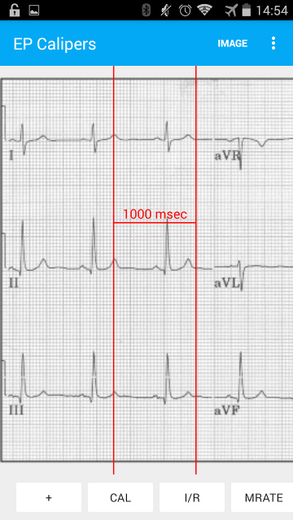
Figure 15: Calibrated time caliper
Changing calibration
You can recalibrate at any time. You can clear all calibration by selecting Clear in the calibration toolbar. Note that calibration is maintained if the device is rotated or the image is zoomed. Selecting a new image will reset calibration.
Interval/Rate
Once a time (horizontal) caliper is calibrated, provided you use time units (such as msec or sec) for the calibration, it is possible to toggle between interval measurements (e.g. 600 msec) and heart rate measurements (e.g. 100 bpm) by selecting Interval/Rate or I/R.
Mean rate and interval calculation
Select a calibrated caliper and stretch it over a number of intervals. Select Mean Rate or mRate and enter the number of intervals measured. A dialog box will show the calculated mean heart rate and interval. This is useful for calculating rates and intervals in irregular rhythms, such as atrial fibrillation.
QTc calculation
Select QTc. Stretch a time caliper over one or more RR intervals and select Measure. Enter the number of intervals the caliper is stretched over and select Continue. Then use the same caliper to measure the QT interval. Select Measure. A dialog box will give the calculated QTc using Bazett's formula. Note that device rotation in the middle of this process when cancel the measurement.
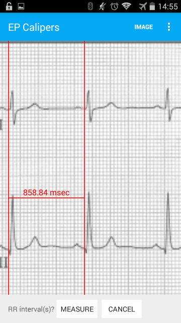
Figure 16: QTc measurement first step: measure 1 or more RR intervals
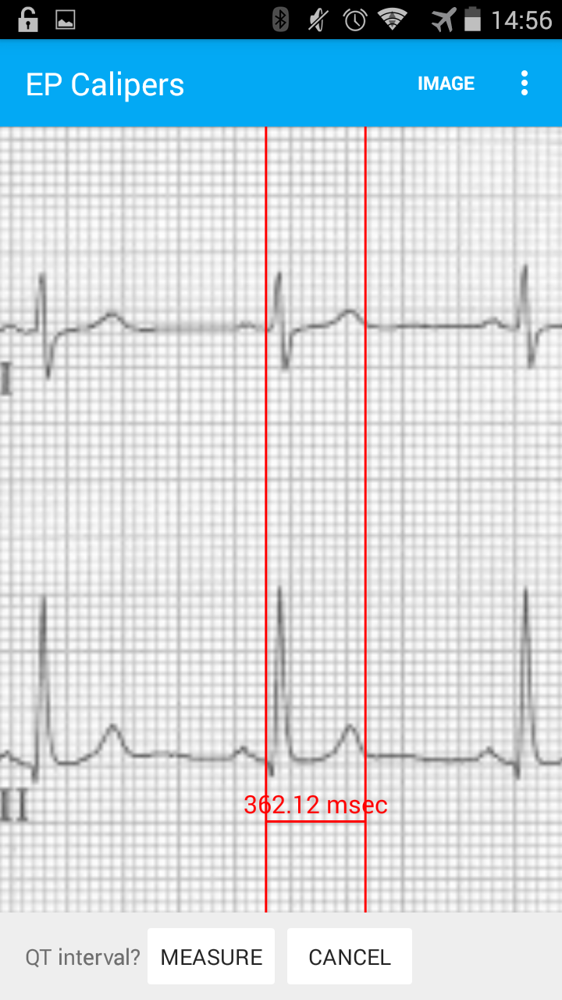
Figure 17: QTc measurement second step: measure the QT interval
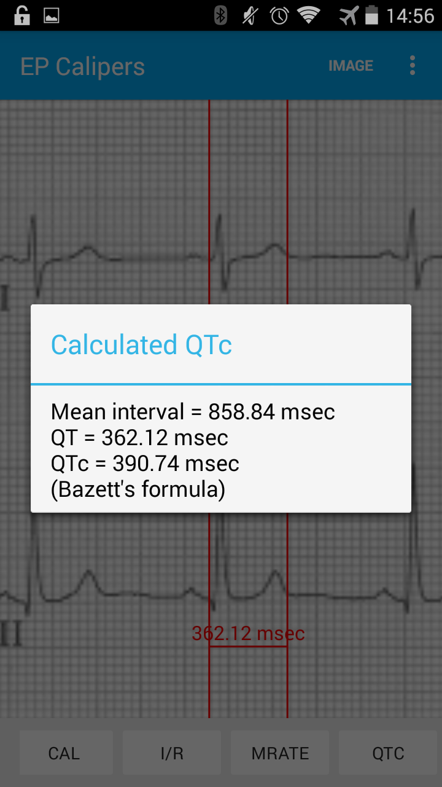
Figure 18: QTc result
Settings
Preferences such as caliper colors and default calibration intervals can be selected using the Settings menu item on the toolbar at the top of the app.
Acknowledgments
- Thanks to Dr. Michael Katz for the concept.
- The source code for EP Calipers is available on GitHub.
- EP Calipers is open source software and is licensed under the GNU General Public License version 3. No guarantees are made as to the accuracy of the app, so use at your own risk.
- For questions, error reporting or suggestions contact EP Studios.
- Website: epstudiossoftware.com
Footnotes:
Note that button titles may be slightly different depending on the size and orientation of the device (e.g. phone vs tablet, portrait vs landscape).